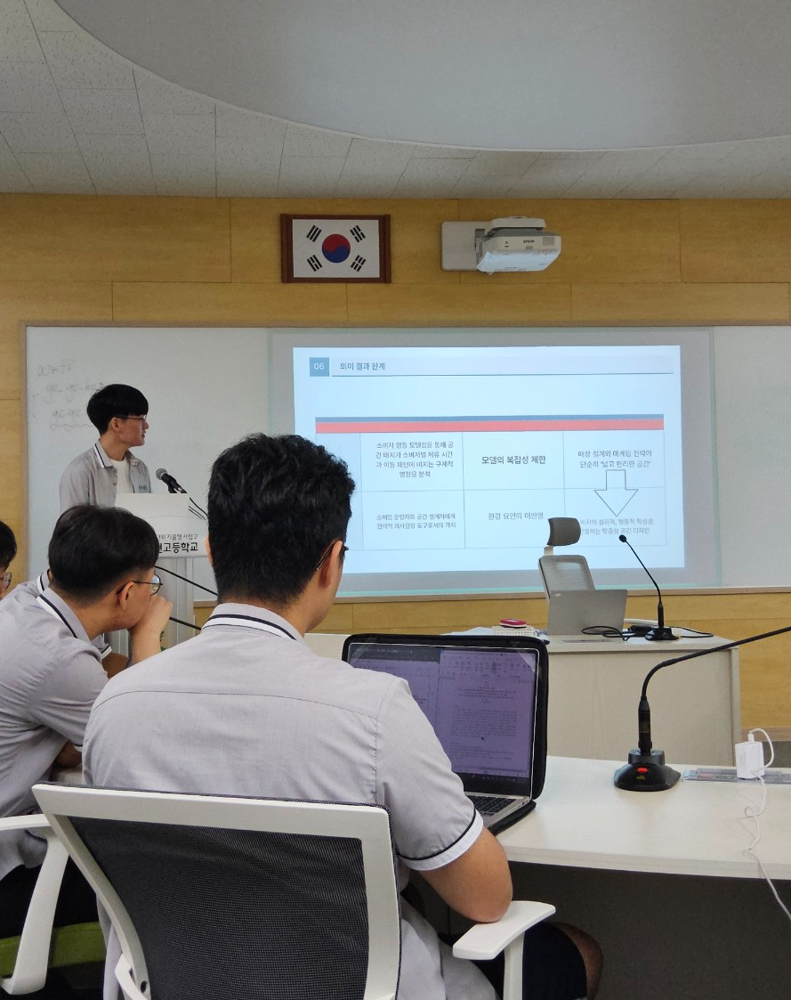

[인터뷰] 이두찬 흐름연구소장 "소비자 맞춤형 매장 설계의 혁신 불러와…빅데이터도 모르던 과거는 잊어달라"
“감이 아닌 데이터로 움직이는 시대, 현장에 흐름을 읽는 설계가 필요합니다.”
지난 11일, 김천고등학교 B3에서 열린 송설학술연구회 발표회에서 주목받은 발표자 중 한 명은 흐름연구소의 이두찬 소장이었다. ‘공간에 흐름을 입히다: 소비자 동선 기반 매장 설계의 미래’라는 제목의 발표에서 이 소장은 최신 빅데이터 분석 기법을 활용한 매장 설계 사례를 소개하며, 감각에 의존하던 기존 매장 구조에서 벗어나 데이터 기반 설계로의 전환을 강조했다.
“이제는 고객이 어떻게 걷고, 어디에 멈추는지를 수치로 보여줘야 합니다. 우리는 상품이 아니라 ‘동선’을 설계합니다”라고 그는 말했다. 실제로 이 소장이 이끄는 연구소는 수도권의 한 프랜차이즈와 협업하여, 고객의 시선과 체류 데이터를 분석해 32%의 매출 상승 효과를 기록한 바 있다.
하지만 발표가 끝난 뒤, 청중들 사이에서는 이두찬 소장의 과거 행적을 두고 논란이 일었다. 그는 과거 온라인 게임 ‘제5 인격’에서 중국인 유저들을 상대로 일본인 여성인 척 신분을 속이고 활동한 사실이 알려지며, ‘친일 행각’에 연루되었다는 비판을 받은 바 있다.
이날 발표회에서도 몇몇 발표자들은 이를 언급하며 이 소장을 향해 날카로운 질문을 던졌다. 그러나 이 소장은 시종일관 이중턱을 한 채로 묵묵부답으로 일관하며, 답변을 회피하는 모습을 보여 아쉬움을 남겼다. 일부 참석 학생들은 “책임 있는 태도가 부족했다”며 회의적인 반응을 보였다.
이에 대해 본지와의 짧은 인터뷰에서 이두찬 소장은 “그 시절은 정보와 정체성의 경계가 모호했던 때였다. 지금은 진지하게 산업 현장과 데이터를 연구하는 입장에서 평가받고 싶다”며, “빅데이터도 모르던 과거는 이제 잊어달라”고 말했다.
송설학술연구회 측은 “다양한 관점을 수용하고, 발표 내용의 전문성에 초점을 맞추고자 초청한 인사”라며 “참가자들이 판단의 균형을 가졌으면 한다”고 밝혔다.
한편, 이날 발표회에는 총 8명의 발표자가 참여해 건축 설계, 소비 심리, 신경과학 등 다양한 분야에 걸친 탐구가 이어졌으며, 발표 영상은 향후 온라인 자료집으로도 공유될 예정이다.